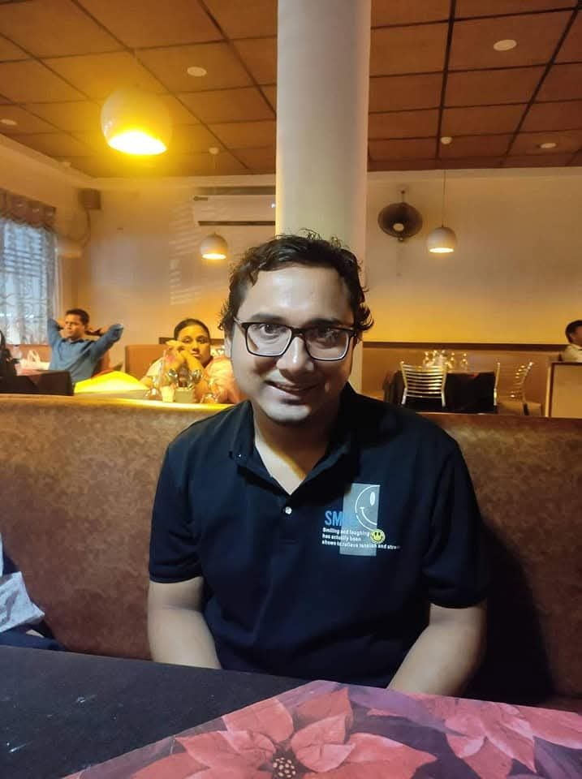

B.Tech/(B.Sc.) in Computer Science & Engineering
Built the foundation: OOP, data structures & algorithms, databases and software engineering principles.
BOOTING ATIK UNIVERSE 0%
OPEN TO OPPORTUNITIES
Transforming Ideas Into Intelligent Digital Experiences.

I'm a software developer who loves solving problems and shaping ideas into products that feel simple, useful and alive. My interests span web technologies, backend fundamentals, databases and artificial intelligence.
I started professionally at ORIENS INFOTECH PVT. LTD., and I keep growing through hands-on projects — from computer vision to interactive 3D websites.
Hover or touch a card. Bars show my self-assessed confidence level.
Built the foundation: OOP, data structures & algorithms, databases and software engineering principles.
About 1.1 years building and maintaining software with Java, PHP, JavaScript and SQL/MySQL in a professional team.
Shipping personal projects across AI, computer vision and interactive web — and sharpening system design skills.
Drag to rotate. Hover a planet to explore. Each orbit is part of my journey.
Open to junior, full-stack, frontend and backend roles, collaborations and interesting problems.